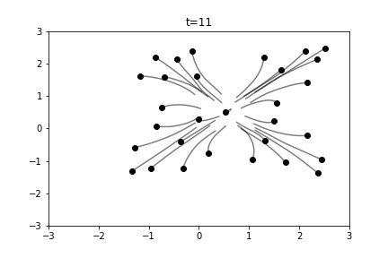
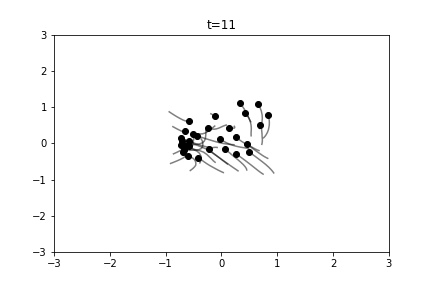
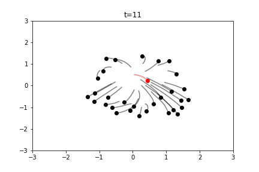

Boids Model
separation: steer to avoid crowding local flockmates
alignment: steer towards the average heading of local flockmates
cohesion: steer to move towards the average position (center of mass) of local flockmates
  